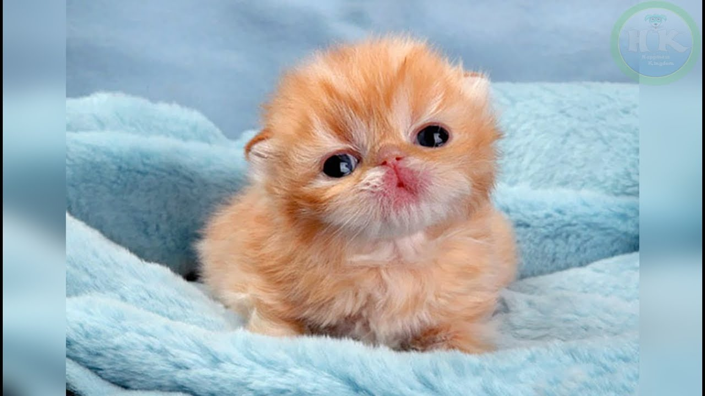

The shop was bombed! -Says innocent goose.
Today our journalist went to Australia to document the fires in the forest. After his little visit he found a little village with, guess who. Gooses! Yes, actually gooses! They have a little society out there! The gooses understand that he is a journalist and one, SAID "Hello creature! You are looking nice! You are a journalist, right? Welp our shop honk, ups sorry, was bombed yesterday!" After the investigation we found out that the city is being rulled by a criminal gang, called "HonkQuack". Yes, the name is silly. We think the same. Our specialist had a chance to take a picture of the boss of the gang:

As you saw, the boss is not a goose! It's a kato called "Small potatoe". He actually has done nothing. The gang was created by him as a place to find friends. It is named "HonkQuack" to connect gooses and ducks! Everyone is in shock. The rest of the gang were criminals and they got aressted. After the investigation we made his plan true! Now gooses and ducks are happily living together!
November 5, 2019, 19:21
Repair Good is a masterpeace! -NotTomatoes
Do you remember the Repair Perfect series? Yes, it failed, but the creators created a new one! Repair Good! It's avalable on Netflex,Holo, Dasney Minus and MeTube in the family subscription! The film is about the old man named Jared in a nuke war with a lot of broken stuff. He needs that stuff repaired. So all the series he seeks the whole planet to repair one thing, his giant Universal Teleporter. It can teleport him to another multi-verse where there is no war or anything bad! At the end of Season One he... Oh oh looks like a spoiler! Go watch it yourself folks! The film has won an Oscaro.
ERR NO DATE

The lemonade shop in Texas in trending!-EveryoneInTexas@FACEBOOK
Sara Rakovsk started a lemonade shop, after that on the next day Elone Macks arived in Texas. He saw the lemonade shop and bought some lemonade. After that he pays 1trillion dollars to Sara and advertises the shop. The shop is now named Sara's Lemonade and it's all over the world! They even have a delivery service with Tasla Cars! Everyone likes the shop! Even our News Company drinks the lemonade everyday! It's tasty and soo relaxing! Everyone likes that. Even the president is drinking the lemonade! It's a trend baby!